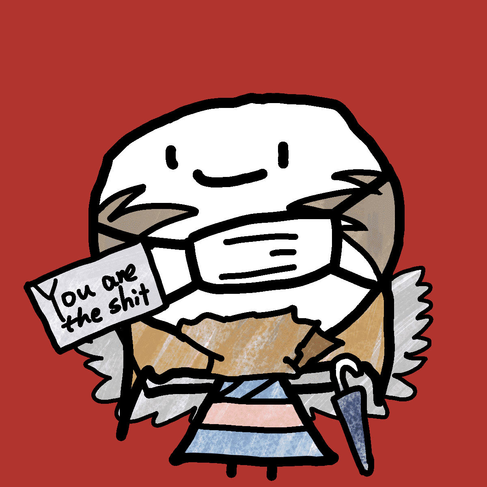 FuckingGoodTyke ▶ 什么是 FuckingGoodTyke？ FuckingGoodTyke 是一个 NFT（非同质代币）集合。存储在区块链上的数字艺术品集合。 ▶ 有多少 FuckingGoodTyke 代币？ 总共有 4,999 个 FuckingGoodTyke NFT
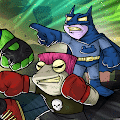 FUD Frog Force (Official) 欢迎来到 FUD 青蛙部队 FUD Frog Force 是 8,888 只独特的精神不稳定青蛙的 NFT 集合。他们与现实作斗争，即使他们不喷油漆或闻胶水，他们也相信自己拥有超级英雄的力量。 他
Fud Society ▶ 什么是Fud Society？ Fud Society 是一个 NFT（不可替代代币）集合。存储在区块链上的数字艺术品集合。 ▶ Fud Society 代币有多少？ 总共有 1,091 个 Fud Society NFT。
FuDaoVerseDAN 来自 Dan Collection 的 8,888 位天神将降临并在元宇宙中复活。FuDaoVerse 是一个#WomeninNFTs 项目，支持积极性、儿童教育和传统艺术。FuDao
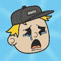 Fudders ▶ 什么是Fudder？ Fudders 是一个 NFT（不可替代令牌）集合。存储在区块链上的数字艺术品集合。 ▶ 有多少个 Fudders 代币？ 总共有 6,464 个 Fudders NFT。目前，2,7
FudFarm 来农场。留在FUD。为模因而活。…爱是一块！地毯。Fud Farms 构成了 Fud Farm 生态系统的基石，从 2021 年 12 月初推出的创世纪 pfp“The Founding Fudders”
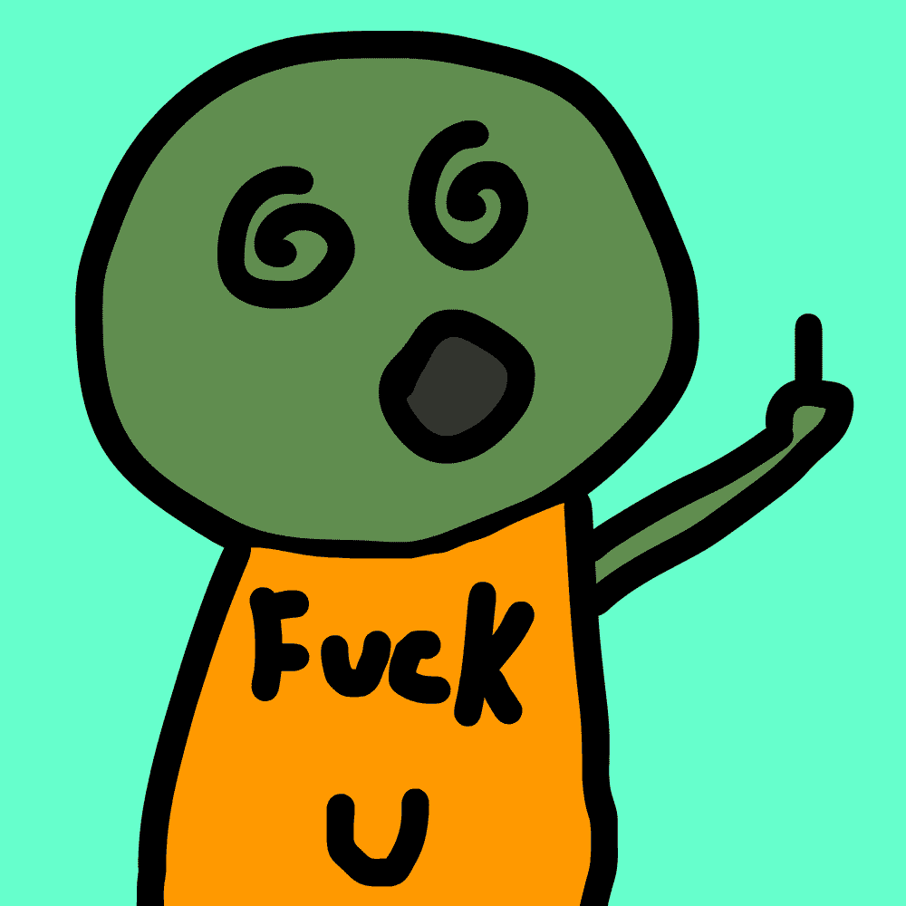 Fuk Everything FukEverythingNFT，7月31日，MINT 现已面向 FUKEVERYTHINGARMY 推出，FUKEVERYTHING 持有者将可以免费索取。（3 FUKEVERYTHING = 3 FUKEVERYTHINGARMY 等）对于 非
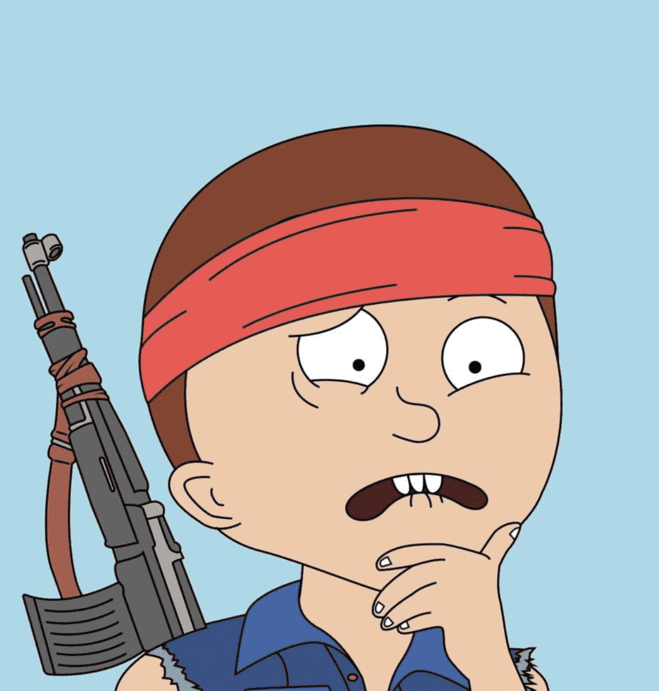 FukBois Official 这是官方的！！FUKBOIS 将于 8 月 8 日美国东部时间下午 4:20 铸造。为白名单用户提交钱包的截止日期是美国东部标准时间 8 月 7 日（星期日）晚上 8:00 如果
Full Moonbirds 项目网站、社交联系方式、项目介绍内容详见： 一直想知道其余的月鸟长什么样？现在你可以！Full Moonbirds 可让您铸造全身 Moonbirds！Full Moonbirds 是
FULL SEND METACARD V2 项目网站、社交联系方式、项目介绍内容详见： FULL SEND METACARD 建立在以太坊区块链上，供应有限的 10,000 个 NFT，可让您访问 FULL SEND 和 NELK 帝国。FULL SEND METACARD NFT 是一个 NF
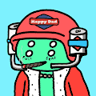 FULL SEND X Alien Frens Official FULL SEND 和 Alien Frens NFT 系列之间为粉丝打造的完全独特的合作。建立在有限供应 10,000 NFTS 的以太坊区块链上，完整的发送元卡将让您访问完整的发送和 NELK 帝国。 OpenSea 上提供完整
Funcles NFT Funcles(Fun-Uncles) 是一个 GENESIS 集合，包含 3333 个生活在以太坊区块链上的独特功能。他喜欢玩乐，享受生活，并培养他的邪恶莫来支持Movember。 加入我们支持男性健康的
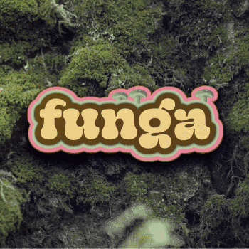 Funga & Friends Funga and Friends 在他们的虚拟音乐节场地 The Festiverse TM举办派对，并管理以音乐为中心的生活方式品牌 LivingThings TM。 作为一种新的有机体，LivingThings 是一个 web3 社
fungiblegary.lens-Collect-15 我们现在很高兴地宣布推出我们的新网站这反映了我们作为加密货币孵化器的定位。 我们到了 ！看到你，匿名，追随者和朋友。不要指望我的帐户有任何附加值
Funky Crypto Bears 一直想见见加密市场的熊？在您的交易冒险中带上您最喜欢的熊。 该系列的基础包括 1.000 只独特生成的 Funky Crypto Bears (FCB)，它们将与沿途掉落的独特特别版一起加
Furballs.com Official 即将推出：世界老板、奖学金、沙漠中的土地，FURBALLS 是一种 链上游戏 来赚取游戏。 与成千上万的玩家竞争，赢得 NFT 并登陆 Furverse。 老版
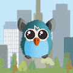 Furby Cat Club 如果您喜欢 Furby 并想支持创作者，请购买。如果您喜欢 Furby 但买不起，请右键单击并保存！在未上市的地方支付你想要的东西将被接受，选择你的猫，欢迎加入社区
Furry Fox Woodside Club V2 项目网站、社交联系方式、项目介绍内容详见： Furry Fox Woodside Club，又名 FFWC，是我们生动的 Fox 化身的 10k 个独特手工 NFT 的集合，这些 NFT 来自一个迷人的故事，
Furu's Mint Club | Genesis Pass 项目网站、社交联系方式、项目介绍内容详见： Furu’s Mint Club 是一个积极合作的社区，专注于 NFT 教育和 alpha FMC 由一群敬业的 NFT 爱好者运营，他们及早研究收藏品并确保我
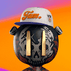 Fury of The Fur NFT OFFICIAL 项目网站、社交联系方式、项目介绍内容详见： 我们订购了 10 集，由动画工作室以 3D 格式制作。本系列将讲述 FOTF vs Codename: Chewies 踏上区块链之旅的历程。神秘盒子将是 2"x1"
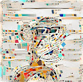 FusionApes Fusion Apes 简介——以受 Fidenzas 启发的艺术风格重新想象经典猿剪影。使用神经网络的力量单独绘制。在第一个系列中拥有一篇应用深度学习创建风格融合的作品，灵感来
Future Turtles - Genesis Future Turtles 是具有 4 个不同角色的数字全身艺术收藏。每个 NFT 都是独一无二的。 现在是 2055 年，加密货币已经超越了整个金融系统。由于政府失败，未来海龟世界的内战
Fuzzy Felons ▶ 什么是模糊重罪犯？ Fuzzy Felons 是一个 NFT（不可替代令牌）集合。存储在区块链上的数字艺术品集合。 ▶ 有多少 Fuzzy Felons 代币？ 总共有 3,333 个 Fuzzy Felons NFT。目前，1,
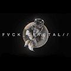 FVCK_CRYSTAL// 项目网站、社交联系方式、项目介绍内容详见： FVCK_CRYSTAL// 是由 FVCKRENDER 设计的 4169 颗宝石的集合。这些 NFT 将允许用户参与未来的活动、抽奖活动和 LVCIDIA // 的专属区域。 没有 FOMO 废话
FWB.art Miami Basel 2021 FWB DAO 是一群文化创造者、思想家和建设者，他们以数字方式和 IRL 共同塑造 web3 的未来。FWB FEST 是一种特殊的体验，它让我们中的许多人永远改变了——我们聆听
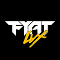 Fyat Lux (Dawn Collection) 在名为 Flux 的事件使所有技术停止工作数千年后，被称为 Sparks 的稀有人出生时就有能力开启人类黄金时代的古老技术。 Fyat Lux Dawn 系列包含来自 Fyat Lux 宇宙的 8080 个火花。每
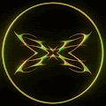 FYDCards FUCKYOU.DIGITAL 限量版 NFT 卡，纸牌世界通过其自身带有艺术点缀的叙事棱镜反映了来自艺术和技术世界的高调话题（因为没有艺术形象，它只会很无聊！） FYDCards 是由来自Fuc
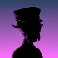 Galactic Secret Agency OG GSA 系列于 2021 年初铸造。10,000 个外星人的收藏很快售罄，并继续被 NFT 领域的许多先驱和早期采用者持有。对于许多人来说，这是他们的第一个 NFT。
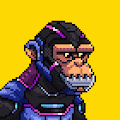 GalacticApes ▶ 什么是银河猿？ GalacticApes 是一个 NFT（不可替代代币）集合。存储在区块链上的数字艺术品集合。 ▶ 有多少 GalacticApes 代币？ 总共有 9,998 个 GalacticApes NFT。目前，3,480 位车
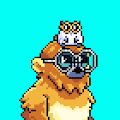 GalacticMonkes ▶ 什么是 GalacticMonkes？ GalacticMonkes 是一个 NFT（不可替代代币）集合。存储在区块链上的数字艺术品集合。 ▶ 存在多少 GalacticMonkes 代币？ 总共有 9,156 个 GalacticMonkes NF
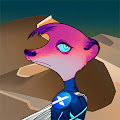 GalaXY Kats Universe 故事讲述了一万只猫鼬继承了人类的意志，进化成了宇宙中最优越的生物——银河猫。每只猫鼬都需要一个收养者，因为它们逐渐忘记了人类及其使命。作为 GalaXY
Galaxy Warriors Presale Token ▶ 什么是 Galaxy Warriors 预售代币？ Galaxy Warriors Presale Token 是一个 NFT（Non-fungible token）集合。存储在区块链上的数字艺术品集合。 ▶ 有多少 Galaxy Warriors Presale Token 代币？
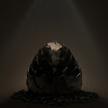 Galaxy-Eggs Galaxy Eggs 艺术家 Gal Barkan收藏展。 20 名幸运的随机 Galaxy Egg 持有者将获得一张10k 分辨率的印刷版海报，海报由我们的艺术总监 Gal Barkan 直接寄到他们的家中。 Galaxy Eggs
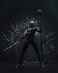 Galaxy-Warriors 完成 Galaxy Eggs X Warriors 的故事。(art)ificial 是一个探索科技与艺术边界的艺术工作室。我们的第一个项目是 Galaxy Eggs - 一个由 9,999 个虚拟世界的 Eggs 组成的生成集
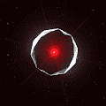 GAMA SPACE STATION 项目网站、社交联系方式、项目介绍内容详见： GAMA SPACE STATION 是一个 NFT（不可替代代币）集合。存储在区块链上的数字艺术品集合。总共有 9,999 个 GAMA 空间站 NFT。
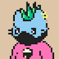 GameCats ▶ 什么是 GameCat？ GameCats 是一个 NFT（不可替代令牌）集合。存储在区块链上的数字艺术品集合。 ▶ 存在多少 GameCats 代币？ 总共有 11,708 个 GameCats NFT。目前 881 位所
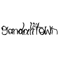 gandalftown.wtf ▶ 什么是 gandalftown.wtf？ gandalftown.wtf 是一个 NFT（非同质代币）集合。存储在区块链上的数字艺术品集合。 ▶ 有多少 gandalftown.wtf 代币？ 总共有 9,292 个 gandalftown.wtf NFT
GANGSTER ALLSTAR 什么是黑帮全明星？ Gangster All Star 是一个 NFT（不可替代令牌）集合。存储在区块链上的数字艺术品集合。 有多少个 Gangster All Star 代币？ 总共有 44 个 Gangster All Star NFT。目前，
Ganja Smokers Beta 这些 lil Ganja 吸烟者很高。 当有人吸食一些大麻并呼出时，就会诞生一个 Ganja 吸烟者：它们是一团大麻烟。每个吸烟者都过着短暂的高尚生活，当他们散布回 $Ether 时感觉
Gape Cats Club Gape Cats 是可收藏的 NFT，拥有超过 1 万个 NFT，包括 100 多个独特的特征。所有 NFT 都是由代码生成的。没有汽油费，住在多边形上。 建造这个项目纯粹是出售基
Garden of Test V2 ▶ 什么是测试花园 V2？ Garden of Test V2 是一个 NFT（Non-fungible token）集合。存储在区块链上的数字艺术品集合。 ▶ 测试花园 V2 代币有多少
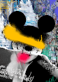 Gary Cartlidge ▶ 什么是 Gary Cartlidge？ Gary Cartlidge 是一个 NFT（非同质代币）集合。存储在区块链上的数字艺术品集合。 ▶ 有多少个 Gary Cartlidge 代币？ 总共有 130 个 Gary Cartlidge NFT。


 图像以及我们的自定义 PKL 文件训练我们的 GAN 超过 300 小时而创建的。")